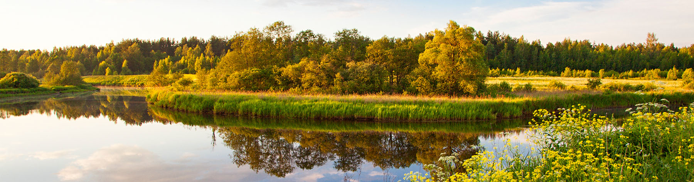

|
Автомобильное путешествие по России |
| Феномен, который открыли для себя большинство россиян в этом году. Наша страна невероятно красива, и здесь действительно есть, что посмотреть. Россия — это сундук с сокровищами, которые можно перебирать бесконечно. У нас полно незабываемых мест от Выборга до Камчатки — пора пользоваться тем, что они доступны безо всякой волокиты с визами.
|
| Путешествие по России на машине: что нужно знать |
Если вы читаете эту статью, то вы более-менее опытный водитель. Или у вас есть знакомый водитель, на которого вы и планируете взвалить весь километраж своего интересного путешествия на машине. Поэтому мы не будем писать банальные советы — вроде тех, что для поездки вам понадобятся деньги и документы, а у машины должны быть четыре колеса и руль. Вместо этого уточним особенности длительных поездок для отдыха в России:
- В бюджет нужно заложить дополнительные расходы. Это платные парковки, жилье, сувениры и экскурсии, которые обязательно будут, если вы найдете интересные варианты отдыха
- Решите, что для вас важнее — сэкономить время в дороге или получить яркие впечатления. Маршрут по России на машине требует именно такого выбора. По скоростным магистралям можно ехать быстро, но пустые поля и маленькие домики вряд ли доставят эмоции. И наоборот: если вы будете заезжать в небольшие симпатичные города или пробираться к природным достопримечательностям, это займет время
- Подкрепляться по дороге лучше в проверенных заведениях с известным названием. Это особенно важно в путешествии с ребенком. Если же вывеска ничего вам не говорит, посмотрите, не припарковались ли рядом фуры и грузовики: усталые глаза дальнобойщиков не зря глядятся в ночь — они знают, где можно поесть вкусно и безопасно
- Выберите, где остановиться. После того как вы решите, куда поехать путешествовать на машине, определитесь с маршрутом поездки и забронируйте жилье там, где проведете одну или несколько ночей. И чем раньше начнете искать варианты, тем больше будет выбор
|
| Плюсы и минусы самостоятельной поездки |
Преимущества:
- Вы сами решаете, куда поехать по России на машине. Это шанс составить любой маршрут и самому выбрать места для посещения
- Вы экономите время. Никаких экскурсоводов и долгих ненужных остановок на вокзалах и в аэропортах
- Минимум контактов с другими людьми — можно сказать, карантин
- Полноценные впечатления. Самостоятельно на машине вы захватите гораздо больше красивых мест, чем в путешествии поездом или самолетом
|
Недостатки:
- Риск попасть в ДТП или столкнуться с техническими неполадками своего авто
- Можно быстро утомиться, причем как водителю, так и пассажирам — не каждый может долго сидеть в одной позе по несколько часов подряд
|
|
 |
|
Путешествовать можно по всей России, но в некоторых регионах ужесточены карантинные ограничения. Перед любой поездкой обязательно сверяйтесь с актуальными правилами въезда и рекомендациями местных властей |
|
 |
|